Eight days of residue, cross-examined for one question nobody had asked: when. 300 screenshot filenames are the only free-running timestamp the client leaves behind — nobody writes those but a human pressing a key. Set them against the biography database's dated deeds and the client's own tick tape and a shape appears: a night-watch schedule, a dead zone across the late morning, and a 22:00 roll-call that repeats almost every night.
Top three hours: 00:00, 23:00, 22:00 — together 176 of 394 minutes. Hours 10:00 and 11:00 are empty across the entire window; whatever this schedule is, it is not a morning one.
Busiest weekday: Sun with 111 minutes. Quietest: Tue with 6. Every value below is hoverable — the cell title carries the exact count.
| day | 00 | 01 | 02 | 03 | 04 | 05 | 06 | 07 | 08 | 09 | 10 | 11 | 12 | 13 | 14 | 15 | 16 | 17 | 18 | 19 | 20 | 21 | 22 | 23 |
|---|---|---|---|---|---|---|---|---|---|---|---|---|---|---|---|---|---|---|---|---|---|---|---|---|
| Mon | 60 | 7 | ||||||||||||||||||||||
| Tue | 1 | 1 | 1 | 3 | ||||||||||||||||||||
| Wed | 3 | 4 | 4 | 11 | 15 | 5 | 6 | |||||||||||||||||
| Thu | 9 | 6 | 9 | 1 | 5 | 8 | 7 | 7 | 11 | 3 | ||||||||||||||
| Fri | 4 | 9 | 3 | 11 | 5 | 4 | 1 | 9 | 3 | |||||||||||||||
| Sat | 1 | 10 | 1 | 3 | 1 | 4 | 3 | 10 | 6 | 6 | 2 | |||||||||||||
| Sun | 3 | 1 | 4 | 3 | 4 | 2 | 34 | 60 |
22 sittings across 8 days. The ruler is drawn in local realm time: each row runs midnight to midnight, and the segments are the minutes the client, the biography tape or a screenshot proved somebody was there.
15 dings between the first and last stamp in the biography database. Slide horizontally: the long horizontal stretches are offline gaps, and they line up with the empty rows above.
63,084 stamped combat lines across 2 log files. This is not added to presence: one boss fight writes more lines than an hour of travelling, so counting it as activity would drown the signal it is plotted beside.
| log file | first line | last line | span | lines |
|---|---|---|---|---|
| WoWCombatLog-111326_063935.txt | 2026-11-13 06:39 | 2026-11-13 07:12 | 32m 00s | 22,067 |
| WoWCombatLog-111526_060037.txt | 2026-11-15 06:00 | 2026-11-15 07:02 | 1h 02m | 41,017 |
These are copies already mirrored into _shots\; the originals in Screenshots\ are untouched. Every one of the 301 frames is a moment somebody judged worth keeping.
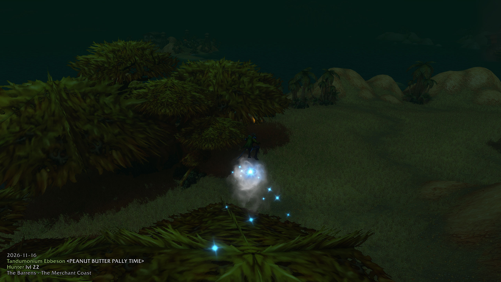
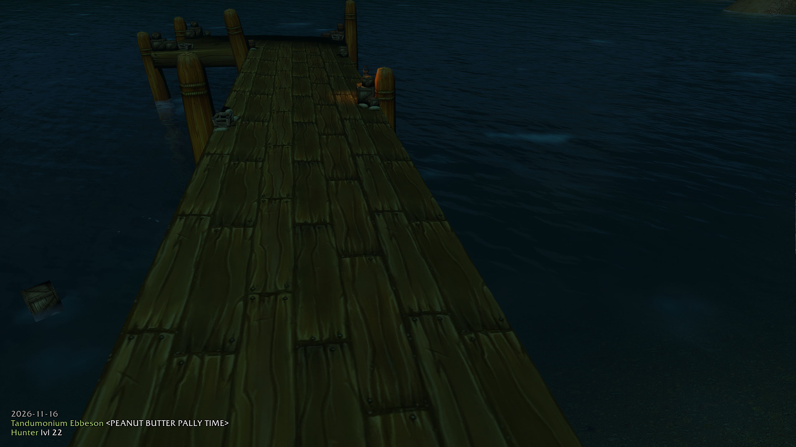
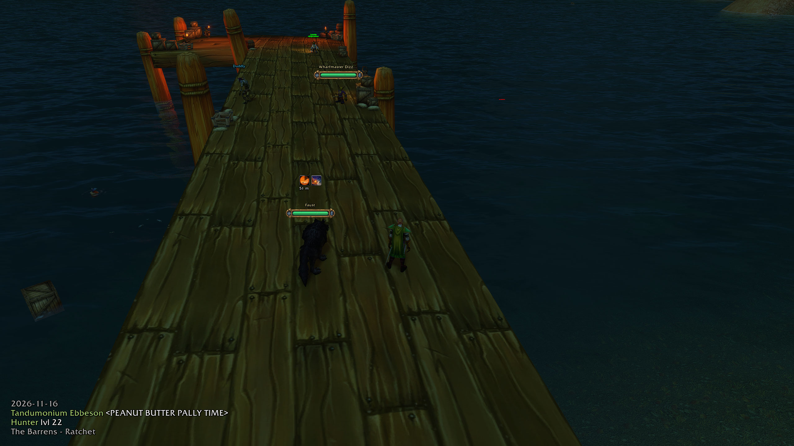
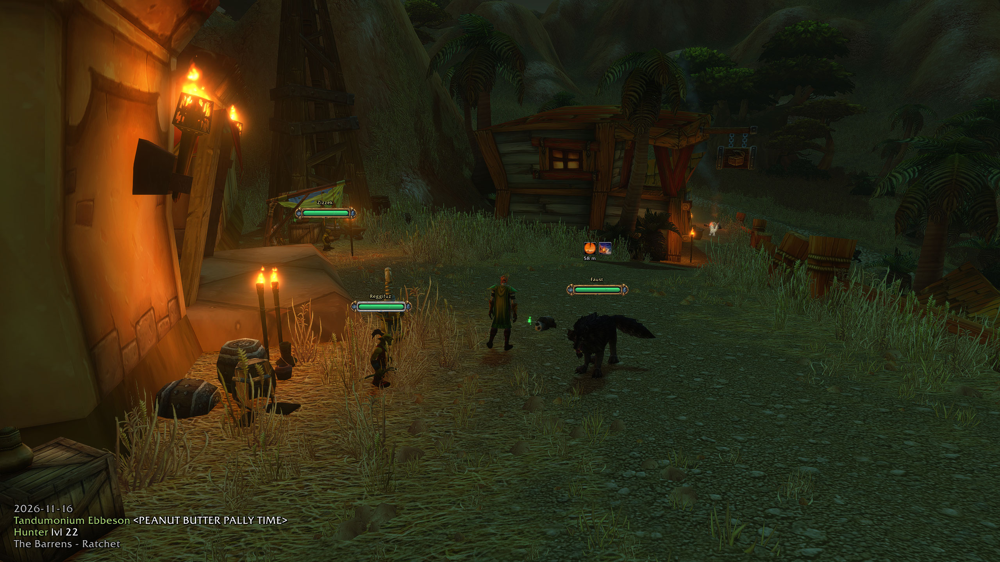
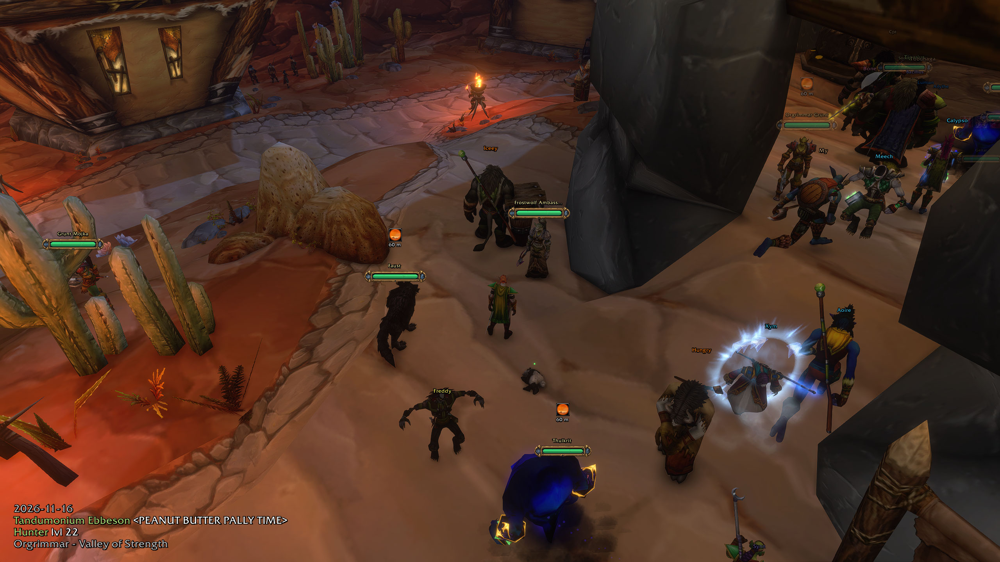
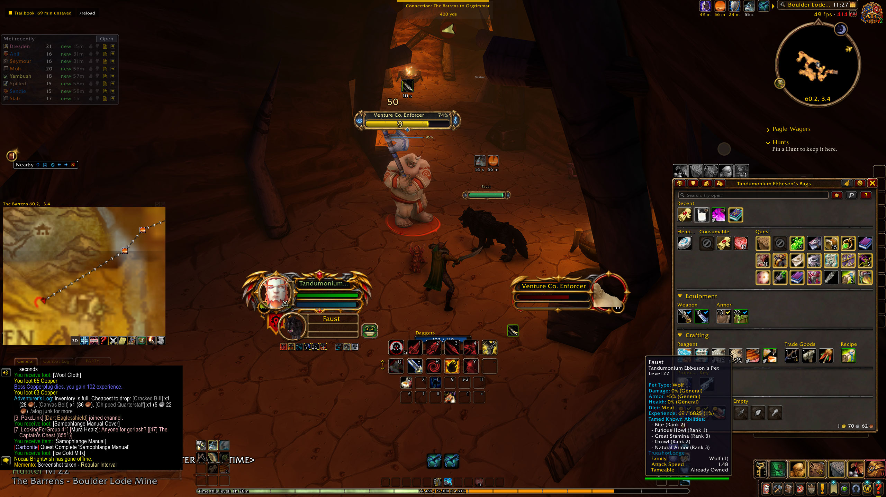
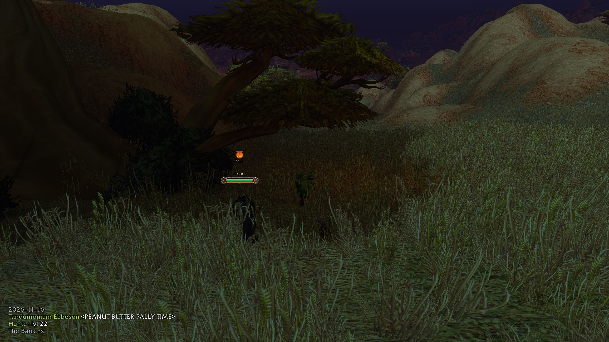
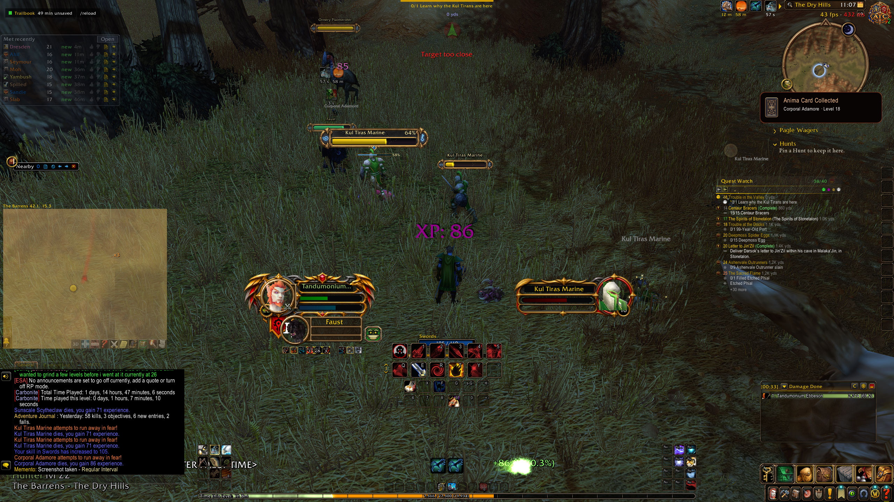
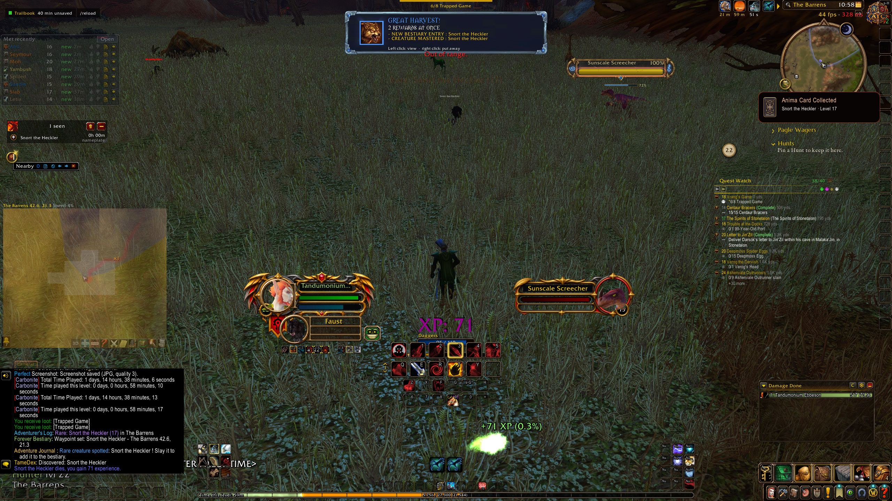
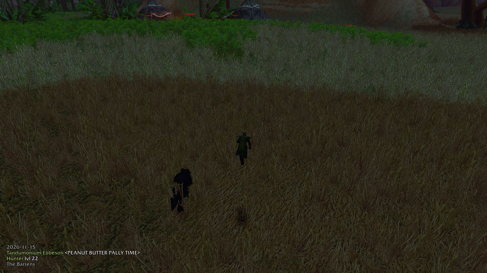
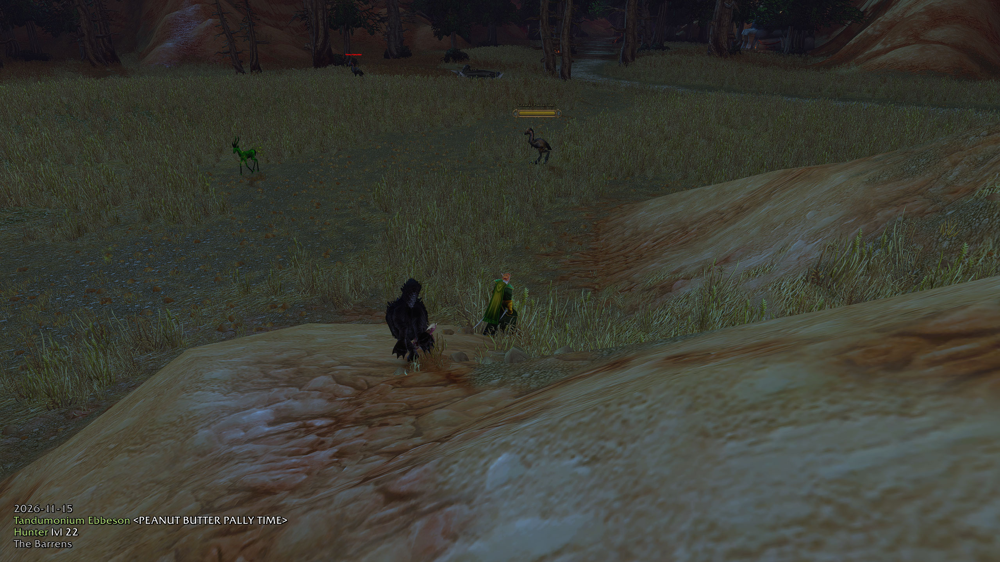
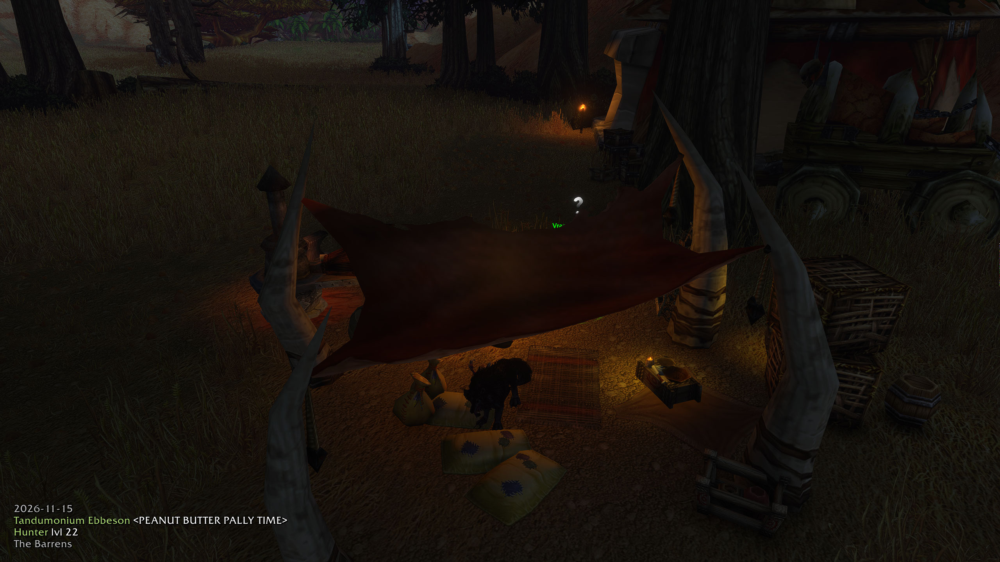
| source | files | size | what it contributed |
|---|---|---|---|
| Screenshots\WoWScrnShot_*.jpg | 301 | 261.6 MB | free-running clock: every filename is a timestamp |
| Logs\WoWCombatLog-*.txt | 2 | 18.4 MB | 63,084 combat lines, bucketed by the minute |
| Logs\General.log | 1 | 288 KB | 2,690 client ticks, 231 /played reads |
| AutoBiographer.lua -> microdeeds.json | 1 | 24 KB | 137 dated deeds re-used, not re-parsed |